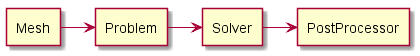

OOP for an Extensible FEM code
Introduction
After a solid 2 days of research, multiple articles and thesis, I figured that the whole OOP paradigm might be the best alternative to an extensible fem code.
The thing is: I need something simple enough so people can learn how the code works only with basic knowledge of the language and the theory.
The current framework
Top level description
User input as the Mesh file and the Problem parameters. Then, we call the solver that return an array with the unknown variable. Lastly we process the output by plotting.
agent Mesh
agent Problem
agent Solver
agent PostProcessor
Mesh -r-> Problem
Problem -r-> Solver
Solver -r-> PostProcessor
Inside the solver is where the analysis encounter the model description.
Solver description
This module consists of assembling the global matrices and solve the linear system formed. The solver was created based on a procedural approach. Which means that the data is attached to a particular flow.
As an example on how the data is attached to the structure:
import numpy as np
class Model(object):
"""Builds a Model object"""
def __init__(self):
self.ne = 4 # number of elements
self.nn = 9 # number of nodes
self.ndof = 18 # number of degrees of freedom
self.XYZ = np.array([[0, 0], [1, 0], [1, 1], [0, 1], [.5, 0],
[1, .5], [.5, 1], [0, .5], [.5, .5]])
self.CONN = np.array([[0, 4, 8, 7], [4, 1, 5, 8], [8, 5, 2, 6],
[7, 8, 6, 3]])
self.DOF = np.array([[0, 1, 8, 9, 16, 17, 14, 15],
[8, 9, 2, 3, 10, 11, 16, 17],
[16, 17, 10, 11, 4, 5, 12, 13],
[14, 15, 16, 17, 12, 13, 6, 7]])
self.surf_of_ele = [0, 0, 0, 0] # surface 0 for all elements
def K_matrix(model, material):
"""Build the GLOBAL stiffnees (K) matrix"""
K = np.zeros((model.ndof, model.ndof))
for e, conn in enumerate(model.CONN):
xyz = model.XYZ[conn] # coordinates of nodes in element e
surf = model.surf_of_ele[e]
dof = model.DOF[e]
mat = material[surf] # material from the surf tag
k = k_matrix(model, xyz, mat) # This is where the ANALYSIS encounter the MODEL
id = np.ix_(dof, dof)
K[id] += k # Assemble
return K
def k_matrix(model, xyz, mat):
"""Build the ELEMENT stiffness (k) matrix"""
k = np.zeros((8, 8))
return k
model = Model() # instanciate the Model class
material = {0: 10} # material property for each surface key
K = K_matrix(model, material)
We can see that if we try to implement a new element type, the k_matrix would have to change.
For the assembler part it doesn't matter how the element stiffness is built.
It only requires the element matrix and the degrees of freedom it affects.
Therefore it makes sense to build a element object that has methods to build the stiffness matrix.
Objective
-
I need a architecture that allows extensibility of the code.
-
For example, I need a way to implement a new type of element, 8 nodes, without affecting the current solver.
-
This can be achieved by building the element matrices independently of the assembling (which is the current procedure).
-
In order to assemble the global matrix the only requirement is the element dof (degrees of freedom) and its element matrix.
-
Therefore, I need an array that stores the element type by its index, loop over it, call the specific constructor for this element type and store it at the global matrix.
-
The object Model seems to be the one responsible for caring the elements type.
-
New approach
Using the same example as before but now with a more robust framework.
object Model
First a class for the Model. This class will take a file as argument and extract data from it.
import numpy as np
class Model(object):
"""Builds a Model object"""
def __init__(self):
self.ne = 4 # number of elements
self.nn = 9 # number of nodes
self.ndof = 18 # number of degrees of freedom
self.XYZ = np.array([[0, 0],
[1, 0],
[1, 1],
[0, 1],
[.5, 0],
[1, .5],
[.5, 1],
[0, .5],
[.5, .5]])
self.CONN = np.array([[0, 4, 8, 7],
[4, 1, 5, 8],
[8, 5, 2, 6],
[7, 8, 6, 3]])
self.DOF = np.array([[0, 1, 8, 9, 16, 17, 14, 15],
[8, 9, 2, 3, 10, 11, 16, 17],
[16, 17, 10, 11, 4, 5, 12, 13],
[14, 15, 16, 17, 12, 13, 6, 7]])
self.surf_of_ele = [0, 0, 0, 0] # surface 0 for all elements
self.physical_surf = [0] # physical surfaces tag
self.TYPE = [3, 3, 3, 3]
model = Model() # Instanciate a Model objectThis object contains all parameters that describe the physical entity analyzed.
object Material
This object contains material parameters.
The class instance doesn't require any extra arguments to initialize.
The materials are set in the most general way, the key is the material property and the value is a dictionary whose key is the surface and the value is the physical value of the property.
The __dict__ attribute contains the instance attributes as dictionary and the update() method, an dictionary method, adds a new entry to the dictionary.
class Material(object):
"""Builds a Material object"""
def __init__(self, **kw):
self.__dict__.update(kw)
material = Material(E={}, nu={0: 0.2})
def E_time_dependent(t=1):
return 1e5*t
material.E[model.physical_surf[0]] = E_time_dependent
print(material.E, material.nu, material.__dict__)
{0: <function E_time_dependent at 0x0000021DD38717B8>} {0: 0.2} {'nu': {0: 0.2}, 'E': {0: <function E_time_dependent at 0x0000021DD38717B8>}}
This implementation is good because:
-
I used to hard code the material properties, like
material.E, as a attribute. -
Any materials properties can be set. Therefore, if the problem is static, there is no need for inertial parameters, and if its a thermoelastic problem we need thermal properties.
-
Even material properties that vary through time.
Cautions:
-
Because the user is setting any material property we need to define a set of variable conventions that need to be checked when the parameter is going to be used. So, for example, when calculating the stiffness matrix we need to check if
material.Eandmaterial.nuwere defined, otherwise raise an error saying that those properties need to be assigned.
object Element
The element object contains the constructor of element matrices and vectors. It is created only when the solver is assembling the global matrices.
class Element(object):
"""Build an Element object with a constructor for a specific element type"""
def __init__(self, eid, model):
Element.type = model.TYPE[eid]
Element.conn = model.CONN[eid]
Element.xyz = model.XYZ[self.conn]
Element.dof = model.DOF[eid] # dof must be know a priori
Element.surf = model.surf_of_ele[eid]
if Element.type == 3:
self.constructor = Quad4()
elif Element.type == 4:
self.constructor = Quad9()
else:
raise Exception('Element not implemented yet!')
class Quad4(object):
"""Constructor of a 4-node quadrangle (TYPE 3) element"""
@staticmethod
def stiffness(material):
try:
E = material.E[Element.surf]
except:
raise Exception('Material not assigned for surface!')
k = np.zeros((8, 8))
return k
class Quad9(object):
"""Constructur of a 9-node quadrangle (TYPE 10) element"""
@staticmethod
def stiffness(material):
pass
element_test_obj = Element(1, model)
print(element_test_obj.type)
print(element_test_obj.constructor.stiffness(material))3 [[ 0. 0. 0. 0. 0. 0. 0. 0.] [ 0. 0. 0. 0. 0. 0. 0. 0.] [ 0. 0. 0. 0. 0. 0. 0. 0.] [ 0. 0. 0. 0. 0. 0. 0. 0.] [ 0. 0. 0. 0. 0. 0. 0. 0.] [ 0. 0. 0. 0. 0. 0. 0. 0.] [ 0. 0. 0. 0. 0. 0. 0. 0.] [ 0. 0. 0. 0. 0. 0. 0. 0.]]
Attributes:
-
At first I don't see any use of attributesAttributes derived from the model will be the same for all element types. This is done using class attributes instead of instance attribute (self) -
Element.typeseems useful. And it is, it's going to be used to decide whichconstructorobject to instantiate. -
The thing is: I don't want to repeat the model attributes for each element type, so I assigned them as class attributes. I'm feeling that there must be a better way, but I've already spent too much time.
Methods:
-
Static methods seems useful. Indeed, they are. I will use static methods to build the element matrices using the constructor object.
Observations
-
According to Archer (1996), there is a Element base class and the each element type inherit from it.
module Solver
The solver module contain the procedure to solve the problem.
If it is a statics problem, then we call the statics.solver().
At first, this procedural approach for the solver seems reasonable since the methodology consists of a step-by-step framework.
There is no need to create an class for the solver.
Inside the solver module there are the assembler functions (in different modules), for instance, the stiffness matrix assembler.
def K_matrix(model, material):
"""Build the GLOBAL stiffness matrix"""
K = np.zeros((model.ndof, model.ndof))
for eid in range(model.ne):
element = Element(eid, model) # Build the element based on type
k = element.constructor.stiffness(material) # constructor for each element type
id = np.ix_(element.dof, element.dof)
K[id] += k
return Kdef solver(model, material):
"""Solves the problem"""
K = K_matrix(model, material)
solver(model, material)